编辑配图·非现场实景
编辑配图·非现场实景
马峦山郊野公园
马峦山郊野公园位于马峦山地，瀑布群、溪谷、手作步道和客家村落构成深圳少见的山水郊野体验，降雨会同时放大水景与风险。与同类…
DISTRICT GUIDE · 19 PLACES
自然山水、东纵历史与新公共文化建筑之间距离很近。
SMALL PICKS
金龟村、坪山老街和大山陂公园更偏社区与自然教育，适合不追热门机位的人。
票务概览：明确标注收费 0 个；其余条目可能免费、预约或按项目计费，出发前以详情页和官方公告为准。
ALL PLACES
编辑配图·非现场实景
马峦山郊野公园位于马峦山地，瀑布群、溪谷、手作步道和客家村落构成深圳少见的山水郊野体验，降雨会同时放大水景与风险。与同类…
 编辑配图·非现场实景
编辑配图·非现场实景
聚龙山生态公园位于坑梓，山体、湿地湖面和季节花海构成大尺度生态公园，花期之外仍可观察不同水岸与林地生境。从聚龙湖湿地转向…
 编辑配图·非现场实景
编辑配图·非现场实景
坪山中心公园位于坪山中心区，行政文化建筑、水景和开阔步行空间形成新区公共客厅，适合与文化聚落串联而非单独追求大型游乐设施…
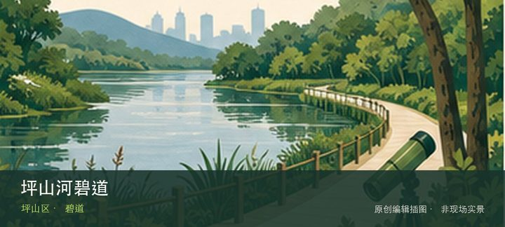
编辑配图·非现场实景坪山河碧道位于坪山河沿线，河道修复、桥梁、社区与产业空间沿线切换，适合分段理解坪山从工业区到新城区的水岸变化。先辨认坪山…
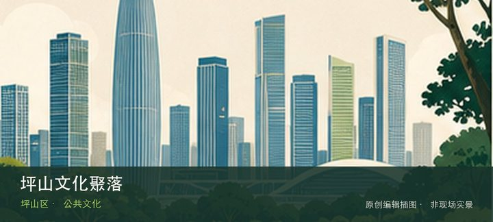
编辑配图·非现场实景坪山文化聚落位于坪山中心区，图书馆、美术馆、剧场和书城以连贯建筑群集中布置，内容切换方便，是东部少见的一站式公共文化目的…
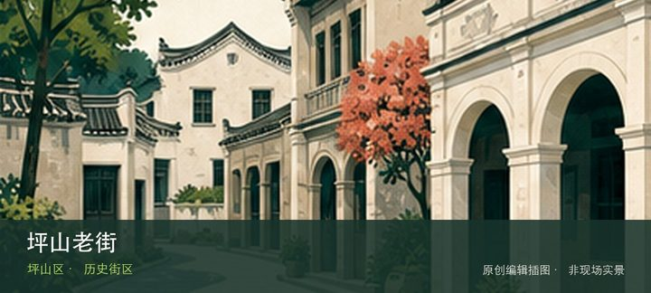
编辑配图·非现场实景坪山老街位于坪山街道，客家街巷、旧商铺和东江纵队历史线索混在居民生活中，适合与纪念馆一起阅读而不是只拍老立面。若只匆匆经…
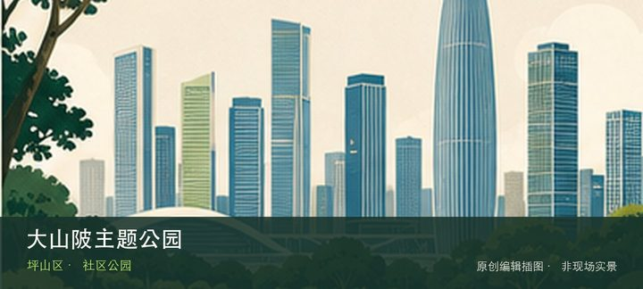
编辑配图·非现场实景大山陂主题公园位于马峦山脚，山脚水体、草地和社区慢行设施构成低强度休闲空间，可作为马峦山天气不佳时的安全替代而非登山入口…
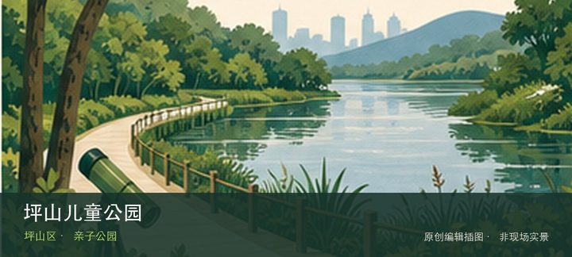
编辑配图·非现场实景坪山儿童公园位于坪山，分龄游乐、自然教育与开放草地服务家庭客群，热门日期的预约、设备检修和遮阴条件决定实际体验。先辨认分…
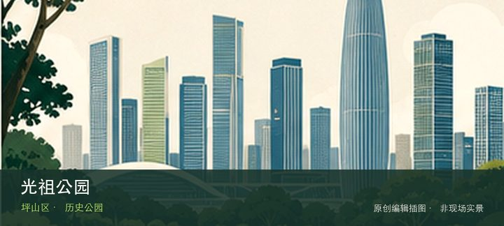
编辑配图·非现场实景光祖公园位于坑梓，客家人文纪念、社区园林与坑梓地方史结合，规模不大但能为附近古村和传统建筑提供人物线索。先辨认光祖人文纪…
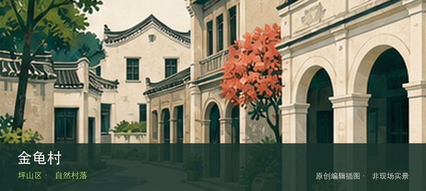
编辑配图·非现场实景金龟村位于石井街道，客家村落、山林、溪水与自然教育活动共同构成城郊目的地，公共参观与营地活动边界需要分别确认。现场的空间…
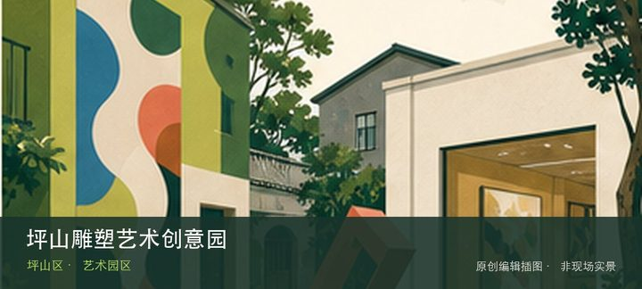
编辑配图·非现场实景坪山雕塑艺术创意园位于坪山，雕塑工作室、材料加工与阶段展览并存，创作生产属性强于常规美术馆，工作室开放需看活动安排。现场…
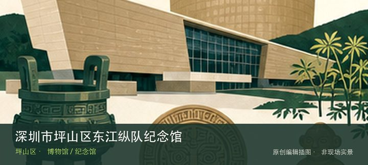
编辑配图·非现场实景深圳市坪山区东江纵队纪念馆位于坪山老街片区，旧址、文献与战争时期群众动员共同讲述东江纵队历史，是连接坪山地方社会与华南抗…
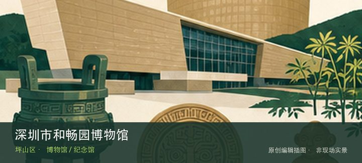
编辑配图·非现场实景深圳市和畅园博物馆位于丹梓中路，民办收藏和园林式展示空间构成场馆特色，具体藏品门类与开放日应先确认，避免仅凭名称推断内容…
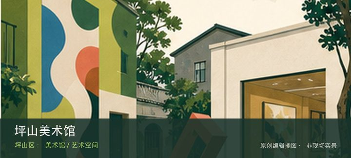
编辑配图·非现场实景坪山美术馆位于坪山文化聚落，当代艺术、城市文化和公共项目在新建筑群中展开，展览常回应坪山的工业化与新区变化。把注意力放在…
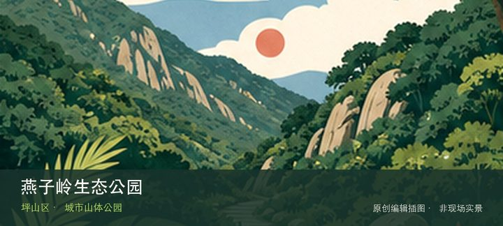
编辑配图·非现场实景燕子岭生态公园位于坪山大工业区荔景路至龙坪路，约62公顷山体绿地在产业城区中提供林下登山、草坡和远眺空间，是坪山中心区的…
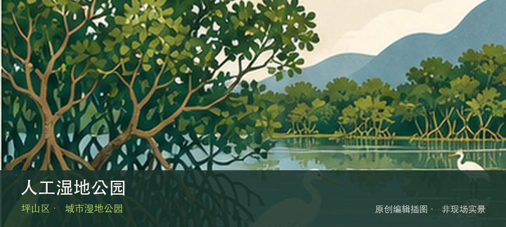
编辑配图·非现场实景人工湿地公园位于青松路与青兰三路交会处，近9公顷人工湿地展示水生植物、净化水体和产业园区生态缓冲，可作短时自然教育停留。…
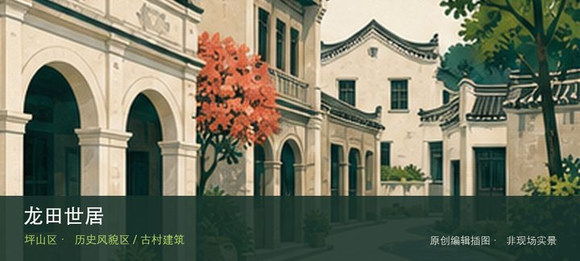
编辑配图·非现场实景龙田世居位于龙田街道田心社区，清代客家建筑与近代办学历史叠合，是理解坪山东部围屋聚落和社区教育记忆的重要节点。与同类地点…
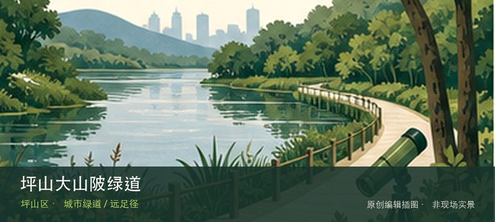
编辑配图·非现场实景坪山大山陂绿道位于大运场馆八号路至江岭社区竹园路口，约6公里骑行与步行线路连接大山陂水库、荔林果园和社区道路，适合半日分…
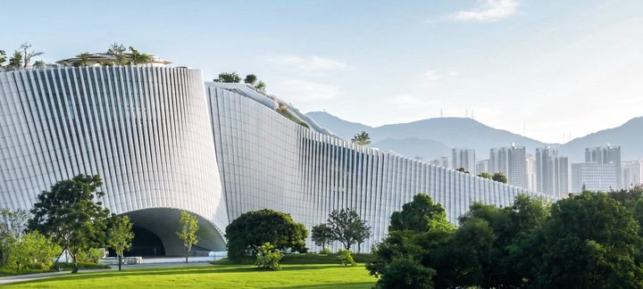
用户提供·建筑实景深圳自然博物馆位于坪山区马峦街道沙坣社区的燕子湖片区，八大主题展厅从宇宙、地球、演化、恐龙、人类、生物、生态一路讲到深圳…